前回の記事「役に立たない!AIによる駄話生成」では、LLMとTTSを使って、仲のいい3人のどうでもいい話、駄話を作りました。
今回はより『やかましさ』をスケールアップした、『バカ騒ぎ駄話』を生成していきたいと思います。
仲のいい友達どうしが、くだらないことで大笑いしている。
笑っている出来事や内容は、客観的には、それほど笑うようなものではありません。他人からすると「本当にそこまで笑うことか?」と思うかもしれません。しかし、仲のいい彼女たちは、とにかく笑います。
どこがそんなにおかしいのか、はっきりとはわかりません。なんだかわからないタイミングで、突然ドッと笑いが起こります。そして、その笑いにつられて、聞いている我々まで笑ってしまいます。
こうしたところに、バカ騒ぎの面白さがあるのではないでしょうか。
我々人間が所かまわずバカ騒ぎをするのは良くありませんし、ヒトによっては一緒にバカ騒ぎする相手がいないかもしれません。
そこで、誰にも迷惑をかけないAIによるバカ騒ぎの出番です。
できあがったバカ騒ぎの冒頭を聞いてみてください。
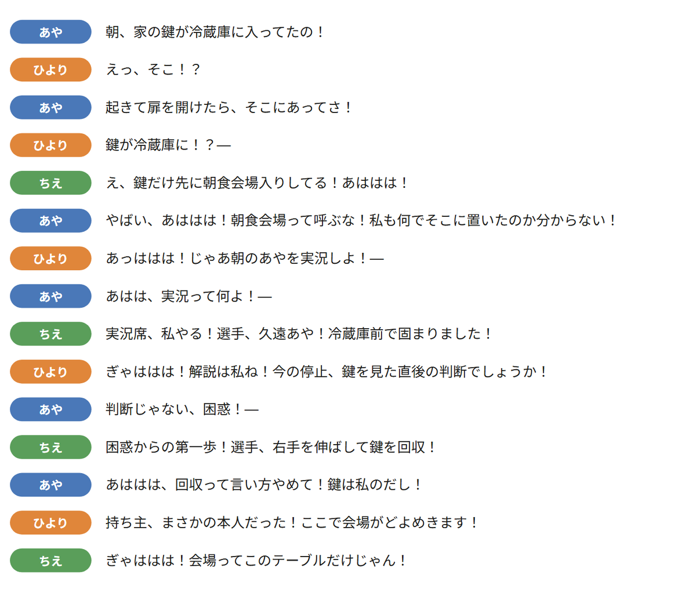
鍵が冷蔵庫に入っていた、というだけで、3人は大笑いしています。
前回作った駄話を、ここではノーマル駄話と呼びます。ノーマル駄話と、今回のバカ騒ぎ駄話では、楽しむところが違います。
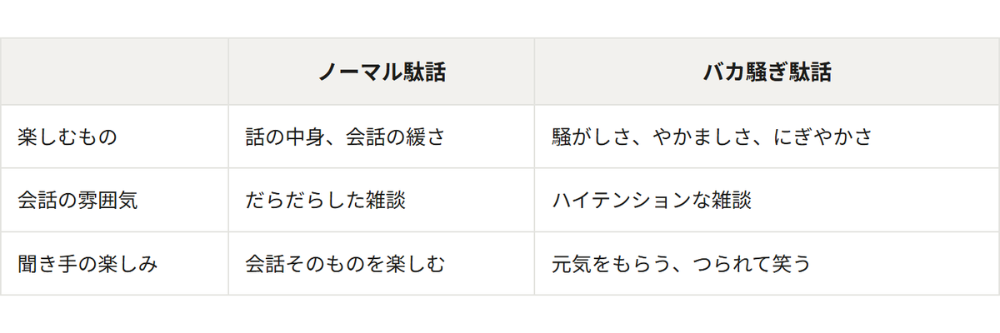
バカ騒ぎ駄話は、何を話しているかだけではなく、彼女たちが楽しそうに騒いでいること自体に魅力があるのではないかと思っています。
今回実現できたバカ騒ぎの特徴をまとめました。
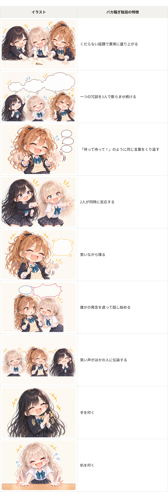
作る流れは基本的に前回と同じです。台本を書き、TTSで音声にし、Whisperで文字起こしし、相づちを足して、タイムラインに並べ、ミックスします。色の付いたところが、バカ騒ぎのために足したり変えたりしたところです。
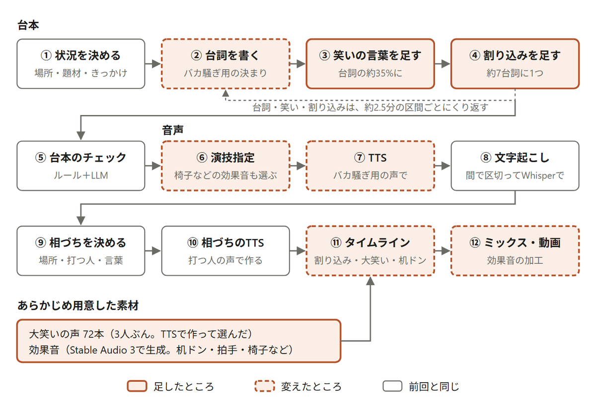
台本から音声・動画までの流れ。前回の記事の流れ図に、バカ騒ぎのために足したところ・変えたところを重ねた
この流れで作った音声が、実際にどう重なっているかを見てみます。冒頭で聞いたバカ騒ぎ駄話の最初の30秒を、実際のタイムラインのデータから、縦を時間、列を人にして描きました。
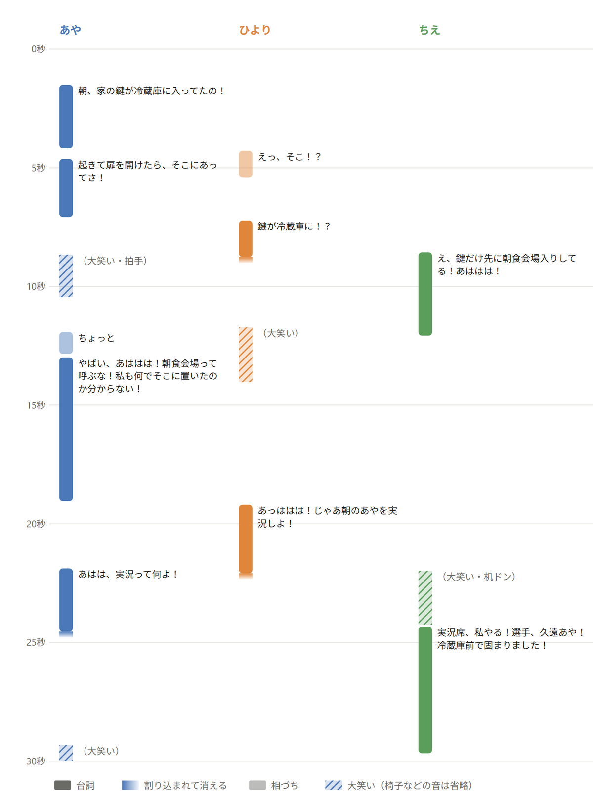
冒頭で聞いたバカ騒ぎ駄話の最初の30秒。上から下へ時間が進み、同じ高さに並んだ帯は同時に鳴っている。色の薄い帯は相づち、斜線は大笑いの声。ひよりの「えっ、そこ！？」のような短い反応も、相づちと同じく前の台詞に重ねて鳴らしている
台本に加えて、割り込み・大笑いの声・効果音といった音の側でも騒がしさを作っています。
台本は前回と同じく、LLMに約2.5分の区間ごとに書かせています。バカ騒ぎ駄話では、台本の決まりをバカ騒ぎ用に差し替えました。「バカ騒ぎ駄話の特徴」で挙げた上乗せ・連呼・被せを含めて、バカ騒ぎ駄話の特徴から、次のような書き方を決まりに入れています。
割り込み：ほかの人が話している最中に話始め、中断させる。
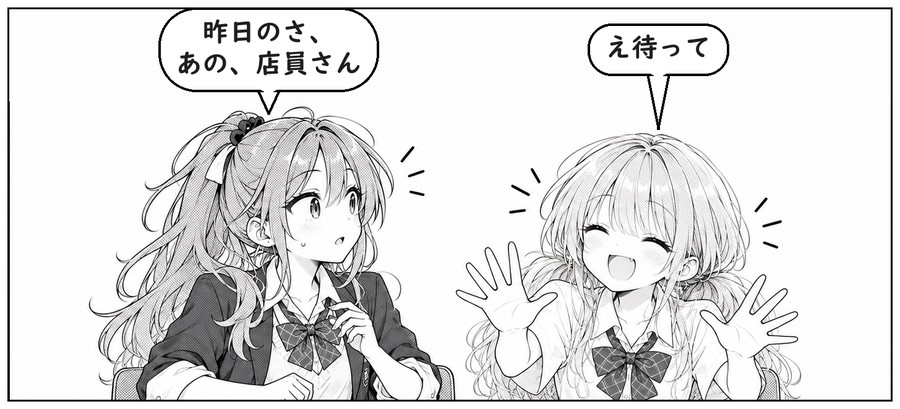
相手の言いかけを引き取る：言いかけた続きを先に言い、本人が「そう！」で受ける。
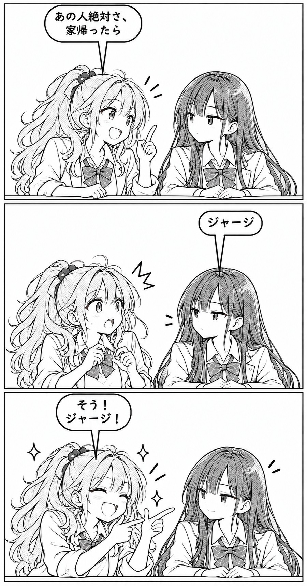
連呼・おうむ返し：「待って待って」のように同じ言葉を重ねたり、相手の言葉を驚いてくり返したりする。
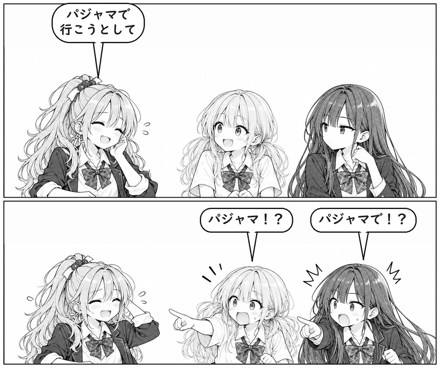
話の上乗せ：ほかの人がテンポよく話を拡大していきます。
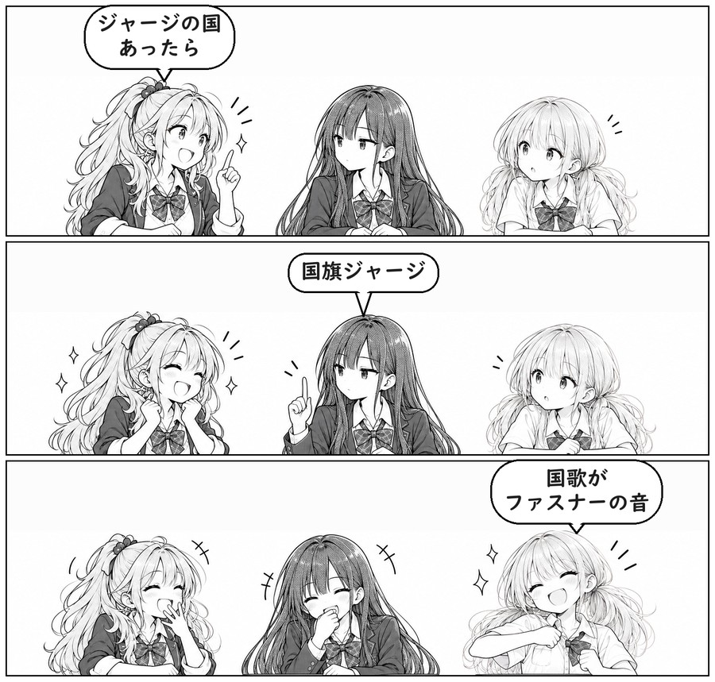
ツッコミ・からかい：ただし本気で否定はしない。言い返された人が、さらに変な返事ができるとよりポイント高い。
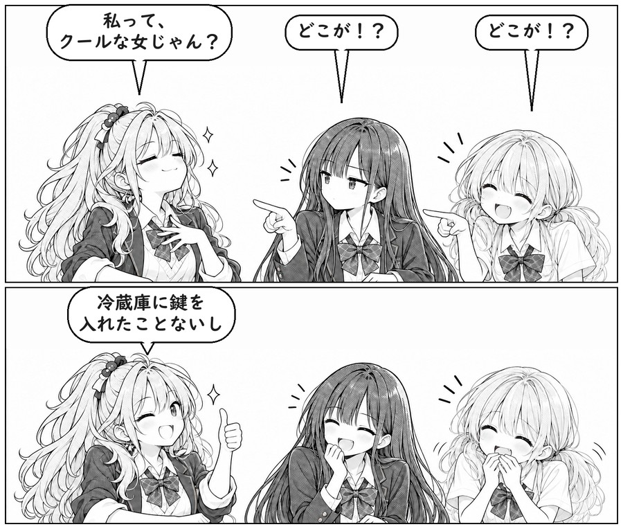
被せ：前の人の台詞の終わり際に、次の人が言い始める。前の人は最後まで言い切る。
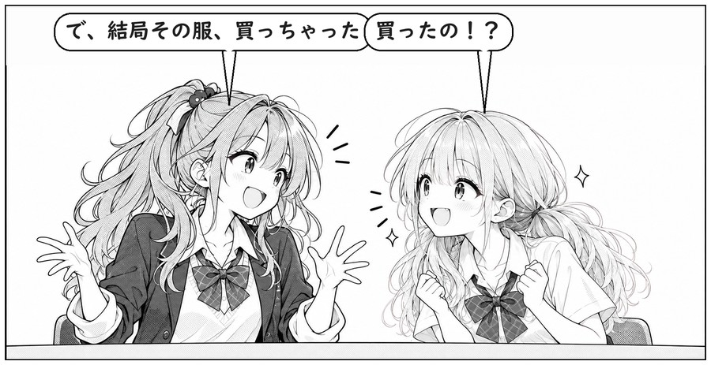
漫画の絵は画像生成AIで作り、台詞はあとから載せました。
さらに台本への味付けとして更に「ぶはっ！」「あっははは！」などの笑いの言葉を適宜足しています。くだらない一言やツッコミのすぐあとの台詞に追加すると、TTSに笑いごと読ませると、笑いながら喋る声になります。
前回と同じ3人のキャラクターに喋ってもらいます。登場人物は、あや・ひより・ちえの3人です。
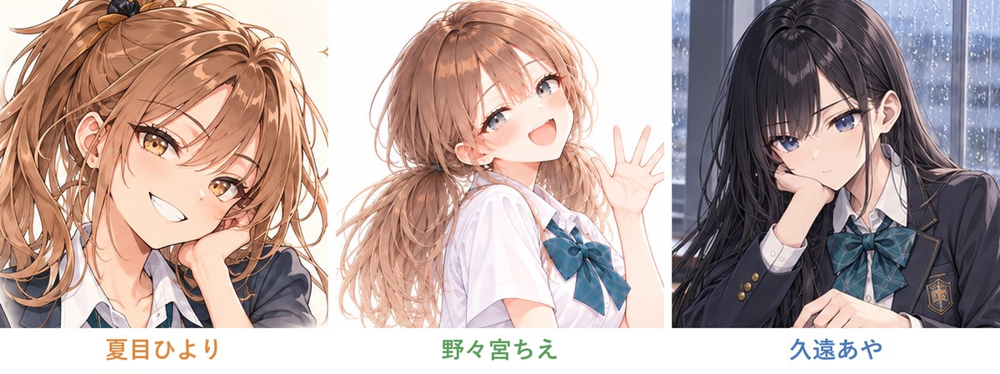
前回の記事を読んだ方は、冒頭の音声で、あやの声が前回と違うことに気づいたかもしれません。バカ騒ぎのために、3人の声を調整しました。
前回のあやは、非常に物静かで冷静な喋り方でした。しかし、その喋り方では、今回のバカ騒ぎについていけません。
もともと、あやの声には癖がありました。普通に喋らせると、非常に落ち着いた声になります。しかし、台詞に「！」を付けると、急にマジギレしたようなテンションになるのです。ノーマル駄話では、この「！」付きの声が使いにくいものでした。
そのためノーマル駄話では、あやの台詞の「！」を、ほとんど「。」に変えて読ませています。冒頭で聞いたバカ騒ぎ駄話から、あやの台詞「判断じゃない、困惑！あっはは、実況の対象にしないで！」で聞いてみます。まず、ノーマル駄話のあやです。
同じ声に、「！」を付けたまま読ませると、こうなります。
一方、バカ騒ぎでは、この激しいテンションが生きます。ただし、普通に喋るときと「！」を付けたときで、テンションの差が大きすぎました。しかも「！」を付けた台詞どうしでも、マジギレ寄りになったり落ち着いたままだったりと、勢いがそろいませんでした。
そこで、テンションの高い声を基準にして、声を作り直しました。前回の3人の声は、Irodori-TTSのVoiceDesign（声の特徴を文章で指定する方法）で作っています。Irodori-TTSは、参照音声を渡して、その声で読ませることもできます。今回は、あやの声で読ませた音声を、参照音声に使いました。
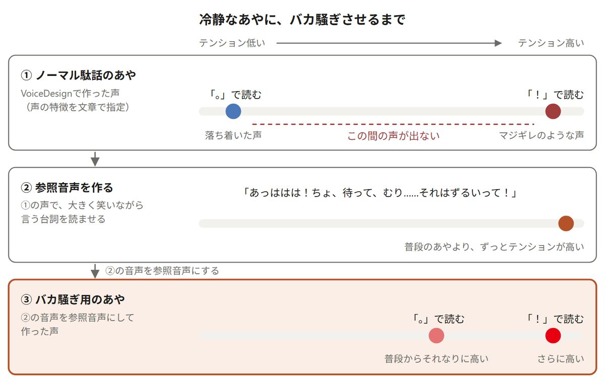
あやのバカ騒ぎ用の声の作り方。前回のあやは、落ち着いた声とマジギレのような声の間が出なかった。そこで、大きく笑っているあやの音声を声の元にした
参照音声には、叫ぶ台詞と、笑いながら言う台詞（「あっははは！ちょ、待って、むり……それはずるいって！」）の2つを試しました。いちばん安定したのは、笑いながら言う台詞から作った声です。すでにあやに聞こえる、テンションの高い音声だったからだと思います。
これが、参照音声にした音声です。ノーマル駄話のあやの声に、「！」を付けたまま読ませています。
この参照音声から作った、バカ騒ぎ用のあやの声です。
まるで前に会ったときはとても小さくて可愛かった親戚の女の子が、久々に会ったらギャルになっていたかのような変貌っぷりですね。声も正確もまるで別人のようですが、どこか面影があります。
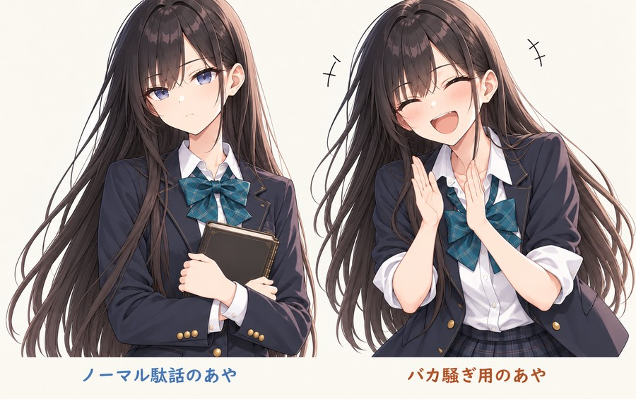
左がノーマル駄話のあや、右がバカ騒ぎ用のあや
同じ声で、「！」を「。」に変えて読ませると、次のようになります。
これによって、普通に喋っているときでも、少しだけハイテンションな声になりました。
あやの声が元気になったことで、今度はひよりとちえの勢いが、相対的に弱く聞こえるようになりました。そこで、2人の声にも調整を加えました。
これによって、2人とも普段からより元気に喋るようになりました。
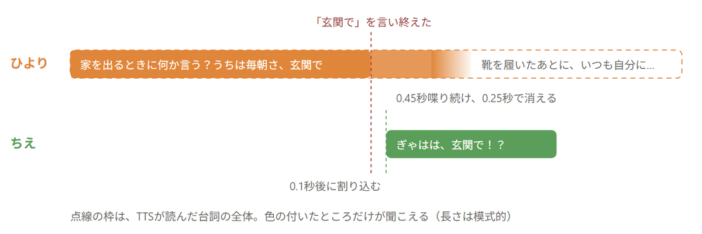
冒頭で聞いたバカ騒ぎ駄話の割り込み。ひよりは続きまで読んでいるので、「玄関で」で言い終える抑揚にならない
続きまで読ませて切った割り込みと、割り込まれるところまでだけ読ませた割り込みを聞き比べてみてください。どちらも、ひよりの声・演技の指定・乱数（seed）は同じで、ちえは「玄関で」を言い終えた0.1秒後に割り込みます。再生して2秒ほどで割り込みが来ます。
割り込みで工夫したのは、音声の作り方です。
途中で切ることを前提に短い台詞を読ませるのではなく、続きを喋るつもりで読ませている点がポイントです。
割り込まれるところまでの短い台詞だけを読ませると、TTSはそれを言い終わった文として読んでしまうからです。
どの言葉が何秒に終わるかは、前回の相づちと同じ方法で求めています。TTSの音声を間で区切ってWhisperで文字起こしし、台本の読みと突き合わせます。間がないところは、読みの長さの比で見積もります。
割り込まれた人は、すぐには黙りません。そこで、割り込まれてから0.45秒は喋り続け、0.25秒かけて声が消えるようにしています。
笑いながら喋る台詞とは別に、3人の大笑いの声をあらかじめ大量に作っておきました。前回の短い笑い声よりも長い、2〜5秒の笑いです。3人の声で「ぎゃははははっ！」などをTTSに読ませ、乱数（seed）や読ませる文を変えて何通りも作り、聞いて良かった72本を残しています。
最初は、どこで大笑いするかを、演技指定のLLM（台詞ごとに話す速さや言い方を決めるLLM）に選ばせていました。しかし聞いてみると、変なタイミングで大笑いが入り、違和感がありました。そこで、台本から決まる次のルールにしました。
次の台詞が笑いながら喋る台詞なら、その前の台詞で笑いが起きたということ。前の台詞を言った人でも、次に話す人でもない3人目が、前の台詞の終わりから大笑いする。
笑いの言葉は、くだらない一言やツッコミのすぐあとの台詞を選んで足しています。そのため、笑いながら喋る台詞の前には、たいてい笑いのきっかけがあります。
大笑いが終わるまで次の台詞を待つと、会話が止まってしまいます。そこで次の人は、笑いが終わるのを待たずに、笑い声に重ねて話します。
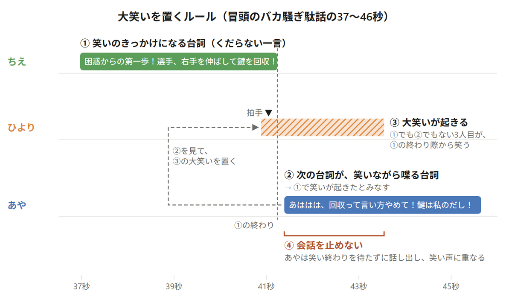
冒頭で聞いたバカ騒ぎ駄話の37〜46秒。①のあと、次のあやの台詞が笑いながら喋る台詞なので、①でも②でもないひよりが大笑いする。あやは笑いを待たずに話し出す（相づち・椅子の音などは省略）
大笑いの2回に1回は、大笑いの中で拍手か机を叩く音（机ドン）を鳴らします。鳴らす音は、拍手・机ドン・拍手の順にくり返します。
椅子のきしみや、指で机をトントンする音もあります。こちらは演技指定のLLMが台詞ごとに選び、鳴らす人の席に合わせて左右に振っています。
効果音は、Stable Audio 3（音を生成するAI）で生成したものを、そのまま使っています。ところが、拍手や机を叩く音は、単体でそのまま鳴らしても、実際にはそれほど迫力がありません。本当に爆笑して机を叩くと、もっと重く、割れた音になります。そこで、机ドンは次のように加工しています。
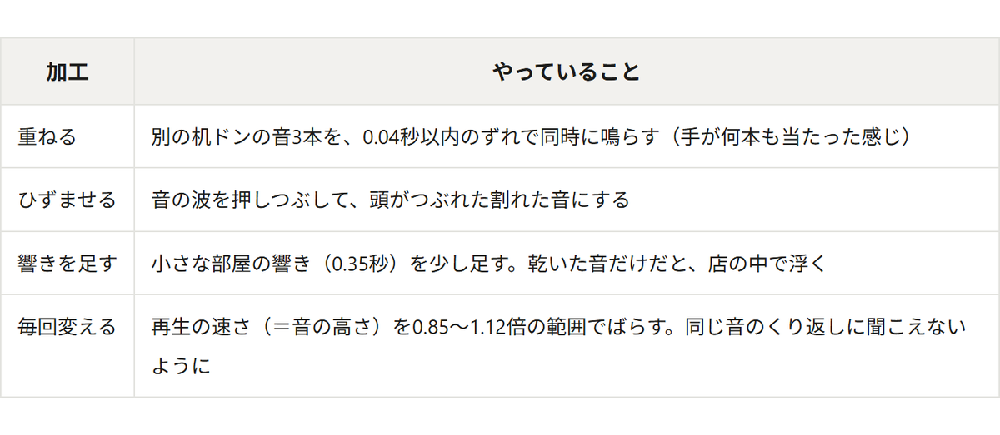
拍手は、迫力以前に、大笑いに埋もれてほとんど聞こえませんでした。そこで、2.5〜4kHzの高い音を持ち上げ、笑い声とぶつかる200Hz以下の低い音を削りました。そのうえで音量を上げ、少しひずませています。
完成例として、私が気に入っている回を紹介します。舞台はカフェ。ひよりが、同級生から校内放送で読む紹介文の代読を頼まれ、断れなかった話です。
「校内放送変わってって頼まれてさ」の時点で、もう楽しく大爆笑してます。早い。たまりません。
断れなかった話として愚痴ではなく、ここまで友達と楽しくネタにできてとても幸せそうです。
バカ騒ぎ駄話の特徴の中には、今回実現できなかったものもあります。
今のバカ騒ぎ駄話は、最初から最後までずっと最高潮にしました。Irodori-TTSは優秀ですが、普段の声とハイテンションな声の中間の声を出させるコントロールが難しいと思ったためです。久遠あやのハイテンションな声をVoiceDesignで調声したやり方を組み合わせると可能かもしれませんが、今後の課題と致します。
実は私はこのAIバカ騒ぎを作るまでは、周りを顧みずに手を叩いたり机を叩いたりするようなバカ騒ぎを聞くのは苦手でしたが、今ではバカ騒ぎが好きになってしまい、無意味に外出して誰でもいいからバカ騒ぎをしている人が見たくてしょうがないくなりました。
皆様もAIバカ騒ぎ駄話を作ってみませんか?